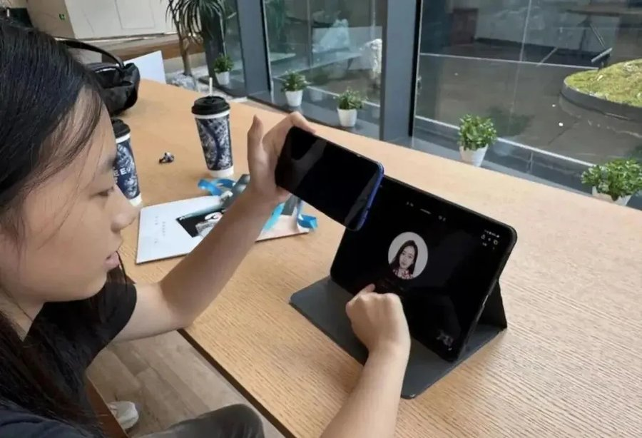
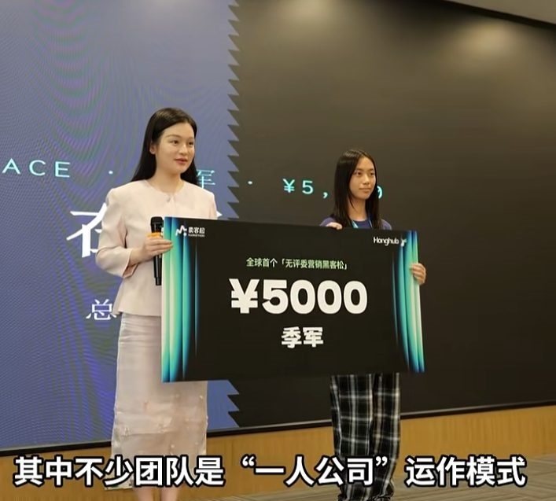
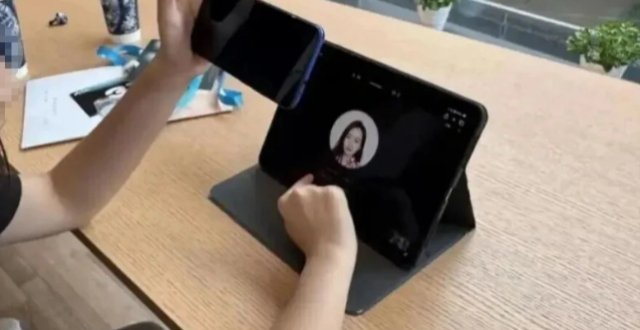
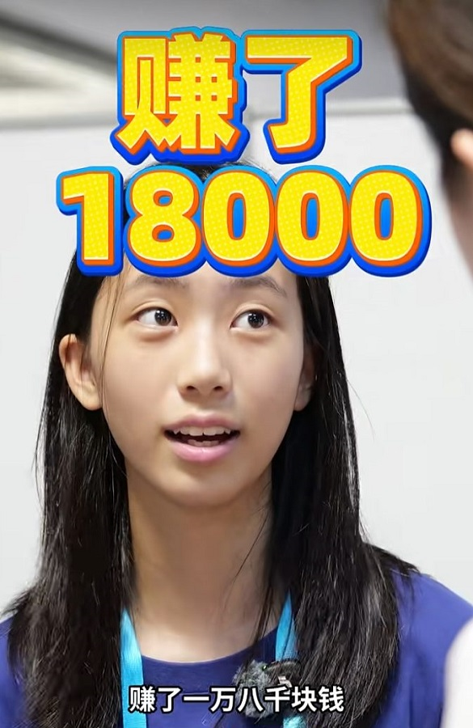
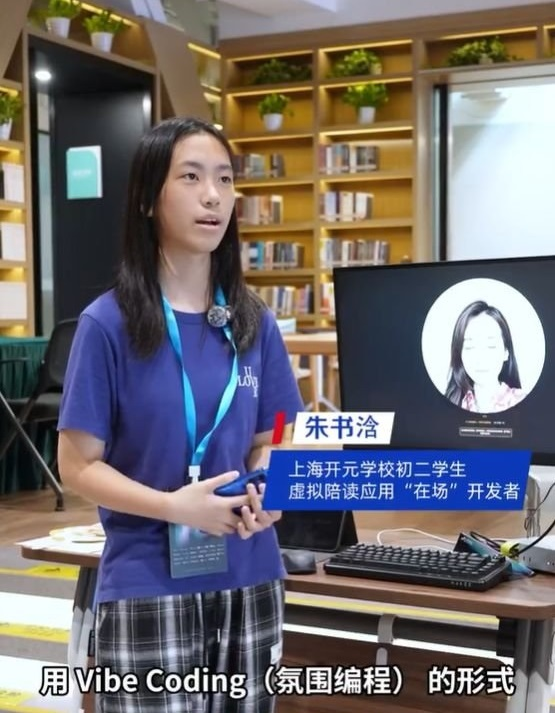
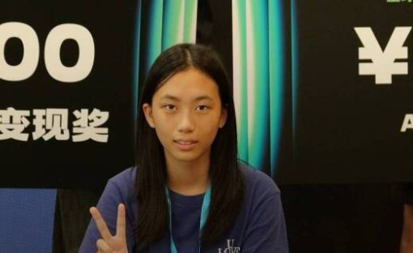

13岁的上海初二女生朱书浛，8月21日到23日，在杭州参加了一场叫“卖客松”的比赛，拿了季军。媒体报道，她做的AI产品，比赛期间成交了约1.8万元。
卖客松的规则不太一样：没有评委打分，唯一的裁判是愿意掏钱的真实用户。50多支团队，48小时，有人买就有收入，没人买一分没有。
她做的是一款叫“在场”的AI虚拟陪读应用，用自然语言编程做的，本人几乎不懂编程。
报道里有个细节特别像普通孩子：她一年前才头一回接触AI，写作业也会分神偷玩手机。

先把钱说清楚：这1.8万是比赛期间的成交额，不是奖金。按公开口径，卖客松拼的就是真实成交，季军另有奖牌和奖金，媒体报道是5000元。
还有一层要拎出来：成交额不等于到手收入。团队怎么分工、成本多少、平台抽不抽成，报道都没写。严谨的说法是：该团队比赛期间产品成交额约1.8万元，获季军。每人分多少，外界不清楚。
我也翻了翻公开信息，截至发稿，这几项确实没有更多披露。所以这篇不替主办方和媒体下结论，能确认的、查不到的，分开摆。

网上“炒作”“剧本”的声音不少，别一句“酸了”带过。
可疑的地方有两点。卖客松本身是营销类赛事，主办方需要话题，13岁女孩自带流量。还有一点，未成年人参加商业变现类赛事，监护人陪没陪、合规审查有没有，报道没交代。
反过来也有两件事是实的。产品真实存在，有人真金白银掏了钱。报道也不是自媒体自嗨，新华日报都登了。
说她是“天才”缺证据，说她是“纯剧本”也缺实锤。比起这个女孩赚了多少，更值得琢磨的是“AI＋未成年人”这件事本身。
想核实的家长也简单：搜“新华日报 13岁 AI 卖客松”看原文，再关注主办方有没有发赛事规则说明。看完原文，标题就带不动你了。

只盯着1.8万看，这新闻三天就忘。但背后有四样东西，比钱值钱，也容易被流量盖住。
四样东西里，头一样是眼睛。她的产品有人付费，不是AI多厉害，是她找到了一个具体的、有人愿意掏钱的场景：AI陪读。这本事，AI时代越来越稀罕。
第二样是胆量，敢把想法做出来。她不会编程，就用自然语言编程把产品做出来了。很多大人遇到新工具先来一句“我不会”，13岁的孩子说的是“我试试”。
容易被忽略的，是第三样：被允许尝试的环境。她爸妈没没收手机，还支持她参赛。但这只是众多因素之一，别简单归因成“没管手机就能复制”。真正值得学的是：家庭在孩子探索时给了一点空间，没替孩子把门关上。
还有第四样，我私心挺想说的：怎么用AI这件事。大人还在纠结“AI会不会取代我”，孩子已经拿它做产品了。
孩子未必更聪明，只是天然把AI当工具；大人却常把AI当敌人或神。

很多家长张嘴就问：“是不是因为她爸妈没没收手机？”这个归因太简单了。
报道里能看到的因素至少有：对身边需求的洞察、赛事提供的真实场景和用户、团队协作、家庭支持，还有时机和运气。她接触AI也有一年，不是三天速成。
放开手机不会自动复制出下一个朱书浛，没收手机也不等于保护孩子。关键不在手机，在孩子拿工具去做什么、有没有人正确引导。

有人借这事说“学校那套该淘汰了”，这话站不住脚。
学校练的是记忆力、逻辑和基本功，这些恰恰是用好AI的地基。AI算得快，可为什么这么算，得你自己想明白。它写出来的东西也一样，看着顺眼不等于是对的。基础不牢，连“提个好问题”都难。
AI时代变的是：答案变便宜了，判断答案的能力变贵了。教育不用推翻重来，在原有地基上叠加一种新能力就行——提出好问题、验证好答案。
热门叙事只讲光鲜。未成年人过早做AI项目、尝试变现，有四道坎绕不开。
时间就先卡住不少人。做产品容易上瘾，作业、睡眠往后排。13岁的主业是学习，AI项目是课余爱好，不能反过来。
比时间更麻烦的，是心理那关。热搜造神快，跌落也快。13岁的孩子，未必扛得住“被全网讨论”到“无人问津”的落差。
商业环境那边，也有不少坑。“AI副业”“未成年人变现”赛道里，割韭菜的、套隐私的都有，孩子涉世未深，容易被利用。
还有一道坎常被忽略：合规与监护。未成年人收款、签合同，涉及监护责任和法律空白。报道没交代朱书浛参赛的监护安排，这一点恰恰是普通家庭容易忽略的。
这事不能全让家长自己扛。主办方把未成年人推上台前，责任就不小：年龄要核验，监护人得知情同意，分账、奖金口径要公开，而不是等家长事后追问。
而且，行业补课不是从零开始，现成的参照就有。
先看《民法典》。八周岁以上的未成年人是限制民事行为能力人，大额交易要监护人同意或追认。13岁女孩一场比赛成交1.8万，每一笔钱怎么算、谁签字，主办方有义务讲清楚。
再看去年施行的《未成年人网络保护条例》。2024年1月1日已施行，平台要设未成年人模式、保护个人信息、防止诱导消费。AI应用和这类赛事，同样该套上这些要求。
直播打赏那套处理办法，也能借来用。孩子未经同意的大额打赏，法院支持家长追回。未成年人参与商业项目挣的钱，归属、退款、纠纷怎么办，也该有类似的明确规则。
至于实名认证、监护人确认这些防沉迷思路，用在赛事上也不难。热搜三天就凉，规矩要立得长久。
家长也有个简单的抓手：孩子真要参加这类活动，先问清三件事——谁主办的、规则公不公开、有没有未成年人保护条款。问不清楚的，谨慎点没坏处。

道理说再多，不如给点能上手的。
今晚吃饭时，先问孩子三个问题：AI能帮你做什么？你想用它做什么？哪些事不想让它替你做？只问，别急着评价。
到了周末，花30分钟和孩子一起用AI做个小东西：定一周菜谱、列个旅行清单都行，哪怕编个小故事。让孩子看到AI能创造，而不只是刷视频。
规矩也可以立一条“AI时间”：作业做完，每天固定时长，比如30分钟，跟管打游戏一样管。不用没收，也不能全放。
末了提醒一句：孩子真要碰钱、碰商业项目，家长全程陪同，平台资质提前核实，时间上限约好，别让孩子独自对接陌生人。
说完这些，还剩一句真心话。
1.8万会过去，热搜也会过去。
真正值钱的，是孩子对世界的好奇，敢试的胆量，还有跌倒了愿意再来的那股劲儿。这些东西，钱买不到，AI也变不出来。